브랜드 스토리는 왜 단순해야 할까요
많은 사람이 브랜드 스토리를 나이키, 애플, 샤넬처럼 수십 년 된 브랜드나 하는 일로 여겨요. 그래서 1인 기업이나 초보 사업자는 '당장 매출 내기도 바쁜데 글 쓸 시간이 없다'며 미뤄 둬요. 영상은 바로 이 불신이 매출이 멈추는 가장 큰 이유라고 짚어요.
반대로 막상 쓰기 시작하면 너무 복잡하게 만들기도 해요. 내 성장 배경부터 직원 복지까지 다 넣지만, 고객은 그런 걸 궁금해하지 않아요. 영상이 내놓는 답은 검은 화면에 뜬 한 줄이에요. 문제를 발견한 것과 그걸 해결한 것, 이 두 조각을 더하면 끝이에요.
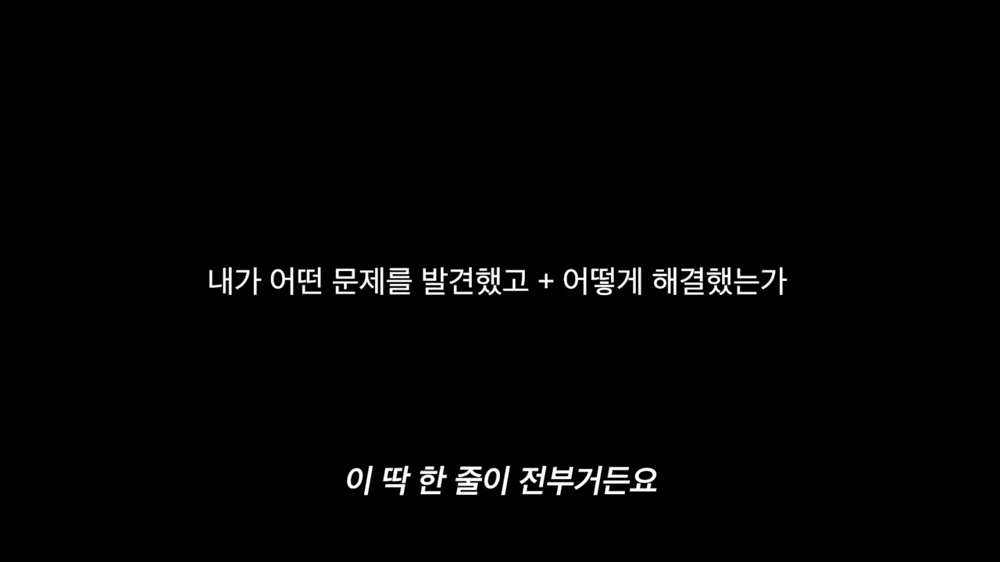
왜 스펙만으로는 안 팔릴까요
영상은 먼저 마케팅 저술가 세스 고딘의 말을 가져와요. 많은 사람이 아직도 '스펙을 늘어놓고 광고비를 써서 위에 노출하면 알아서 팔린다'는 옛 공식에 머리가 굳어 있다는 거예요. 화면에는 강연 무대 위 그의 모습과 함께 이 문장이 그대로 떠요.
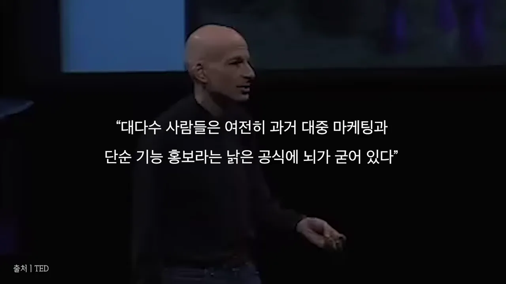
다음 근거는 로빈 랜다와 그렉 브라운이 함께 쓴 책 『사람의 마음을 움직이는 스토리』예요. 화면 가운데 초록색 표지의 책이 그것이고, 양옆이 두 저자예요. 이 책이 인용한 스탠퍼드 경영대학원 제니퍼 아커 교수의 연구가 영상의 핵심 숫자예요. 데이터만 줄 때보다 이야기로 전할 때 최대 22배 더 오래 기억된다는 거예요.
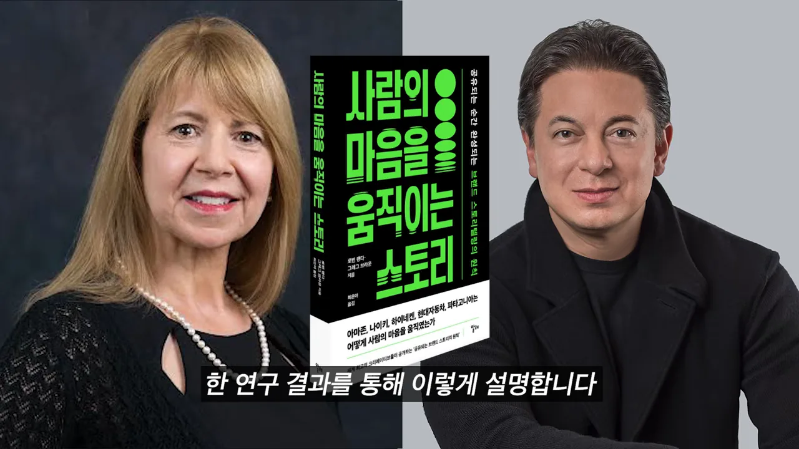
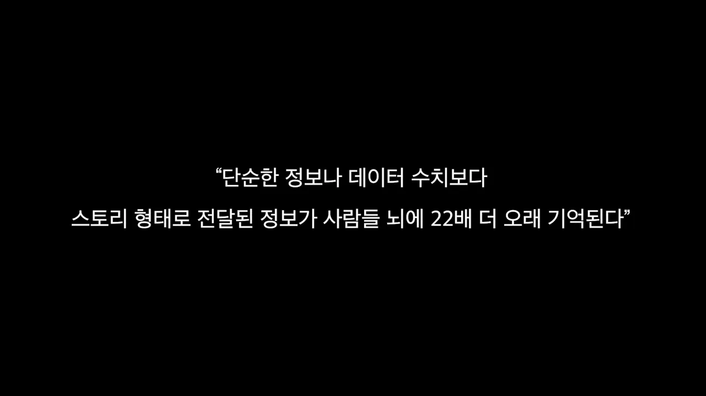
마지막 숫자는 광고의 양이에요. 영상은 이 말을 도널드 밀러의 것으로 소개해요. 사람들은 하루 평균 4,000개가 넘는 광고를 보지만 기억하는 건 100개도 안 된다는 거예요. 덧붙여 전 세계 42%의 사람이 광고를 피하려고 돈까지 낸다고 해요.
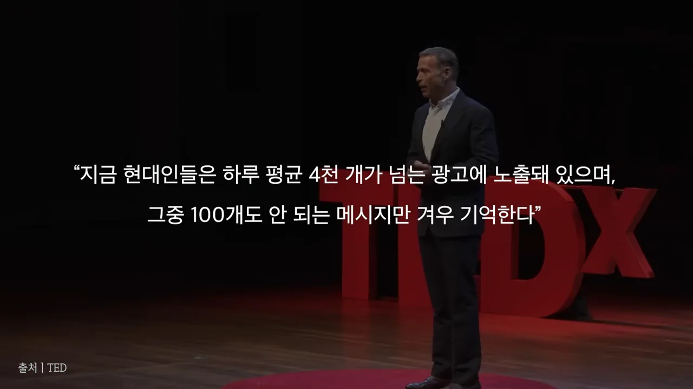
이렇게 광고가 넘치는 때에 스펙만 늘어놓은 광고는 고객의 머릿속에서 0.1초 만에 스팸으로 걸러진다고 해요. 그래서 자본이 적은 초보 사업가일수록 스토리가 거의 유일한 무기라는 게 영상의 주장이에요. 4,000개와 42%는 영상에서 출처를 밝히지 않은 숫자라, 정확한 수치는 따로 확인하는 게 좋아요.
스토리가 사람을 움직이는 원리
영상은 사람의 뇌가 오랜 진화를 거치며 살아남는 데 중요한 정보를 이야기 형태로 기억하게 됐다고 설명해요. 그래서 같은 제품 정보라도 숫자로 주느냐, 이야기로 주느냐에 따라 뇌가 다르게 반응해요. 아래 그림은 영상이 말로 설명한 두 갈래를 나란히 놓은 거예요.
아래 줄 끝에 있는 '배지'는 미국의 크리에이티브 리더 그렉 한의 말에서 왔어요. 광고가 고객에게 배지 역할을 해야 공유와 구매가 일어난다는 거예요. 고객은 '이 브랜드는 나를 이해하네', '이 이야기를 공유하는 나는 멋진 사람이야'라는 정체성을 갖고 싶어 해요.
러쉬는 성분 대신 신념을 말해요
영상의 예시는 화장품 브랜드 러쉬예요. 보통 화장품 회사는 '유기농 알로에가 들어 있고 향이 오래가요'처럼 성분을 앞세워요. 러쉬는 무엇에 분노하고 어떤 가치를 지지하는지를 앞세워요. 동물 실험 반대, 친환경 포장재, 공정무역 원료가 그 예예요. 아래 장면도 러쉬 영상의 일부인데, 꽃을 든 사람들 위로 'human rights(인권)'라는 글자가 떠요. 제품은 한 번도 나오지 않아요.
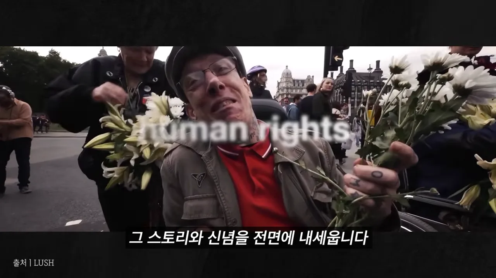
영상은 러쉬가 소셜 미디어가 청소년 정신 건강에 해롭다며 페이스북과 인스타그램 같은 대형 플랫폼 광고를 끊은 일도 꼽아요. 그러면 고객은 '비누 향이 좋다'에서 멈추지 않아요. '이 브랜드도 나처럼 환경과 윤리를 고민하는구나', '이걸 사는 나는 가치 있는 소비를 하는 사람이야'라는 배지를 얻어요.
도널드 밀러의 다섯 단계 공식
그렇다면 초보자도 10분 만에 만들 수 있는 단순한 공식이 있을까요. 영상은 있다고 답하면서 브랜드 스토리 컨설턴트 도널드 밀러를 소개해요. 그가 만든 스토리브랜드 프레임워크를 다섯 가지로 정리한 게 오늘의 공식이에요. 영상은 이것을 2,500년 동안 위대한 영화, 소설, 성공한 브랜드가 써 온 공식이라고 불러요.
아래 화면에 다섯 단계가 한 줄씩 다 떠 있어요. 문장 끝이 모두 '~하세요'인 데 주목해 보세요. 다섯 개 모두 내가 할 일이에요.
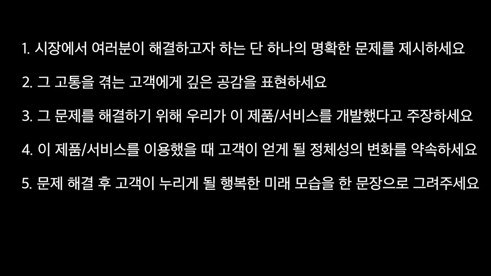
슬라이드에는 단계 이름만 있어서, 영상이 말로 든 예시와 '누가 주인공인가'를 함께 그려 봤어요. 위쪽 다섯 칸이 순서이고, 아래 띠가 각 단계에서 고객과 브랜드가 서는 자리예요.
- 문제 — 시장에서 풀려는 단 하나의 분명한 문제를 꺼내요. 오후 2시면 몰려오는 피로, 광고비를 써도 줄어드는 잔고처럼요. 사람은 자기 문제를 풀려고 지갑을 열기 때문에, 문제를 정확히 짚어야 고객이 소음 속에서 멈춰요.
- 공감 — '카드를 긁기 전에 잔액부터 확인하는 그 답답함, 저희도 잘 알아요' 같은 한마디가 고객과 브랜드를 이어 줘요. 이때 브랜드는 영웅이 아니라 안내자 자리에 서요.
- 해결책 — 그 고통을 끝내려고 이 제품·서비스를 만들었다고 말해요. 복잡한 기술 설명은 빼고 직관적인 해결책으로 보여 줘요.
- 정체성의 변화 — 기능이 좋아지는 걸 넘어, 고객이 어떤 사람이 되는지 약속해요. 돈 관리에 능숙한 여유로운 사람, 피로에 시달리지 않는 프로처럼요.
- 행복한 결말 — 문제가 다 풀린 뒤 고객이 누릴 평화로운 미래를 한 문장으로 그려요.
이 다섯 칸짜리 뼈대가 잡히면 웹사이트와 마케팅 문구는 10분이면 정리된다는 게 영상의 약속이에요.
실제 사례: YNAB와 캐내디언 클럽
영상은 이 다섯 단계만으로 실제로 매출이 오른 사례 둘을 들어요.
YNAB: 기능 자랑 대신 질문 하나
YNAB는 미국의 개인 자금 관리·가계부 앱이에요. 당시 가계부 앱들은 'AI 자산 분석', '한눈에 보이는 그래프', '0.1초 계좌 연동' 같은 기능을 앞다퉈 자랑했고, 고객은 너무 복잡해서 외면했다고 해요. YNAB는 도널드 밀러의 스토리브랜드 팀과 함께 전문 용어를 걷어내고 메시지를 다시 짰어요. 아래 화면에서 밀러 뒤편 그림에 YNAB 간판이 걸린 가게가 보여요.
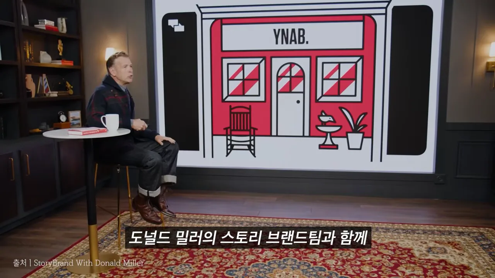
새 메시지를 다섯 단계에 맞춰 보면 이렇게 돼요. 영상은 다섯 단계 중 셋째부터 다섯째까지를 '해결책'과 '변화·결말'로 묶어서 말해요.
| 단계 | YNAB가 한 말 |
|---|---|
| 문제 | 매달 돈 때문에 걱정해 본 적 있으세요? |
| 공감 | 월급날 직전 잔액을 보며 조마조마한 그 마음, 우리가 누구보다 잘 알아요. |
| 해결책 | 지금 바로 YNAB를 받으세요. |
| 정체성의 변화·행복한 결말 | 누구보다 돈 관리에 능숙해지고, 다시는 돈 걱정 없이 자유롭게 살게 될 거예요. |
화면에 나온 YNAB 홈페이지가 실제로 이 구조예요. 큰 제목이 'Do you worry about money?(돈 걱정 하세요?)'로 문제를 꺼내고, 아래 작은 글씨 'Get YNAB. Get good at money. And never worry about money again.'이 해결책, 변화, 결말을 한 번에 담아요. 오른쪽 휴대폰 화면 말고는 기능 설명이 없어요.
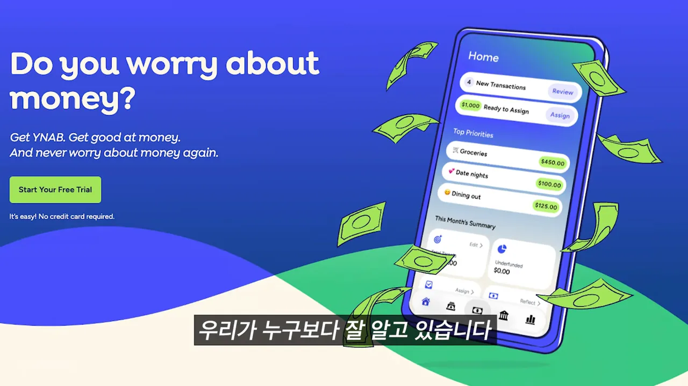
다음 장면은 같은 사이트의 사용자 후기예요. 왼쪽 글은 Quicken도 써 보고 스프레드시트도 써 봤지만 마음의 평화를 준 건 없었다는 내용이에요. 서명이 'Mira, retired confidently with YNAB(YNAB로 자신 있게 은퇴한 미라)'인데, 이 서명이 곧 다섯째 단계의 행복한 결말이에요.
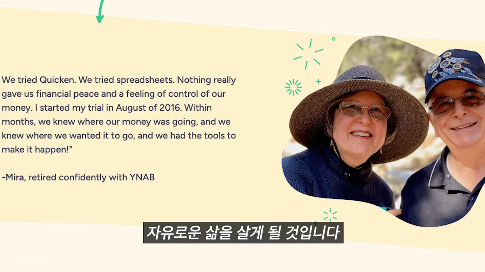
영상에 따르면 이 이야기를 웹사이트와 광고에 그대로 쓰자 사용자가 크게 늘어 YNAB가 북미 1위 자금 관리 플랫폼이 됐다고 해요. 순위는 영상에서 근거를 밝히지 않았어요. 스토리브랜드 홈페이지의 고객사 로고 목록에 YNAB가 들어 있는 것까지는 확인했어요.
캐내디언 클럽: 아빠의 술을 멋으로 바꾼 한 줄
캐내디언 클럽은 캐나다 위스키예요. 영상은 17년 연속 매출이 떨어지던 브랜드였다고 소개해요. 회사는 숙성 연도나 제조 기법을 설명하는 대신, 젊은 층이 이 술을 안 마시는 진짜 이유를 찾았어요. '아빠 세대나 마시는 촌스러운 술'이라는 이미지였어요.
광고 대행사 Energy BBDO(Batten, Barton, Durstine and Osborn)는 이 약점을 뒤집었어요. 1970년대풍 사진 속 세련된 청년이 기타를 치는 모습에 '네 아빠는 사실 너보다 훨씬 상남자였어. 그게 너희 아빠가 마시던 위스키야'라는 한 줄을 붙였어요. 아래 화면은 대행사 이름이 소개되는 순간이에요. 광고 사진 자체는 영상에 나오지 않아요.
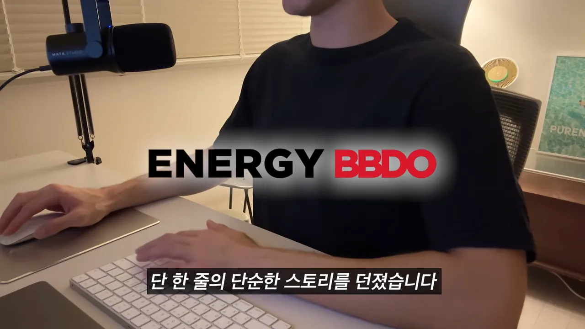
영상은 이 한 줄로 16년 만에 매출이 반등했고 연간 매출이 크게 올랐다고 말해요. '아빠의 술'이라는 약점이 다섯 단계의 첫째 칸, 곧 고객이 가진 진짜 문제였던 셈이에요.
공식을 알아도 못 쓰는 이유
여기까지 보면 '브랜드 스토리는 고객의 문제를 정하고 다섯 단계로 해결책을 내미는 거구나' 싶어요. 그런데 영상은 공식을 다 이해하고도 막상 컴퓨터 앞에서 한 줄도 못 쓰는 사람이 99%라고 말해요. 이유는 고객의 눈으로 보는 객관적인 시선이 없어서예요.
사업하는 사람은 자기 제품에 푹 빠져 있어요. 그래서 기술력, 원단, 기능, 자기가 고생한 이야기가 전부 중요해 보여요. 영상은 이것을 자기중심적 사고에 갇힌 상태라고 불러요. 아래 화면은 세스 고딘이 이 함정을 짚는 장면이에요.
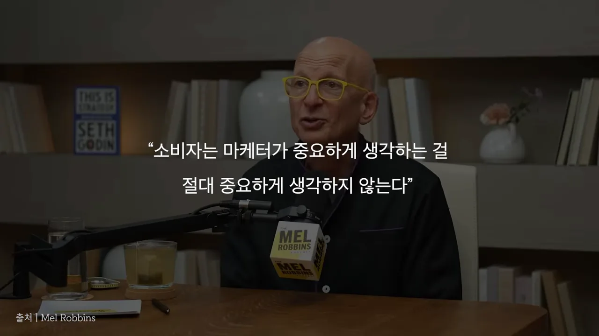
영상은 물리학자 에르빈 슈뢰딩거의 말도 빌려요. 진짜 과제는 아무도 못 본 걸 보는 게 아니라, 모두가 본 것에서 아무도 생각 못 한 걸 생각하는 거라는 말이에요. 영상은 이것을 마케팅의 과제로 읽어요. 고객의 문제는 이미 모두의 눈앞에 있고, 그걸 어떤 말로 짚느냐가 관건이라는 뜻이에요.
현장에 치여 사는 대표는 무엇이 고객의 진짜 문제인지, 어떤 말로 공감을 끌어낼지, 무엇을 깎아내야 메시지가 단순해지는지 스스로 진단할 시간이 부족해요. 그래서 공식을 알고도 결국 옛 마케팅으로 돌아가는 일이 되풀이된다고 해요.
영상의 마지막 정리
영상은 끝에서 네 줄로 정리해요. 첫 줄은 생각을 바꾸라는 말이고, 둘째는 다섯 단계 공식, 셋째는 YNAB와 캐내디언 클럽 사례, 넷째는 이 장의 내용이에요.
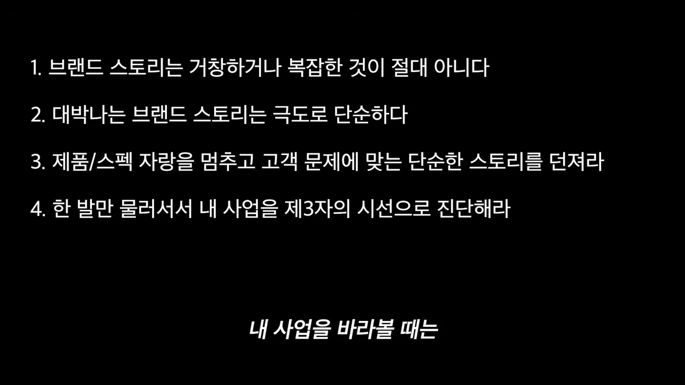